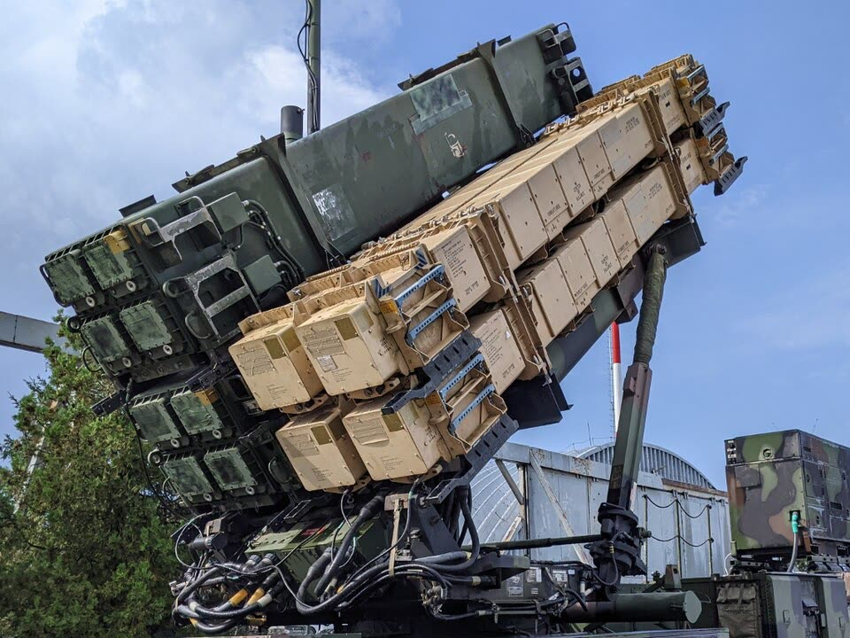
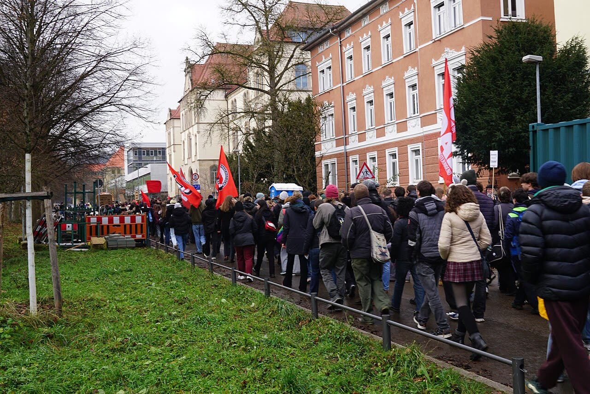

31.10.2026Il coro regge a metà

Foto: Boevaya mashina, CC BY-SA 3.0
Giusto che l'Europa paghi per la sua sicurezza; sbagliato pagare a debito, in anticipo e al buio, missili che arriveranno fra anni. Soldi a consegna, quote pubbliche, Aster con contratti pluriennali e una moratoria sugli attacchi all'energia.
31.10.2026
L'avviso al Golfo è vero, la data la dà una sola testata. Prima del voto Italia ed Europa spingano la trattativa del Qatar: una guerra «breve» sull'energia del Golfo la paghiamo noi, al distributore e in aeroporto.

31.10.2026
Il loro primo punto è la scuola, non la leva. L'obbligo solo per i maschi viene dalla Costituzione, e quel vincolo va discusso; sul conto ai giovani sbagliano bersaglio. I ragazzi italiani avrebbero più motivi.
 30.10.2026
30.10.2026
Bombardare le raffinerie russe fa pagare l'energia più cara anche agli europei che finanziano Kiev: la pausa va ripristinata e resa stabile, anche se al distributore italiano per ora non si vede.
30.10.2026
Chi si prende la giustizia si prende il paese: l'ha fatto il PiS nel 2015, rischia di farlo Tusk oggi. Ma un presidente che entra di notte tra gli spintoni per dire chi è giudice non ripara niente: ora la forza la usano tutti e due.